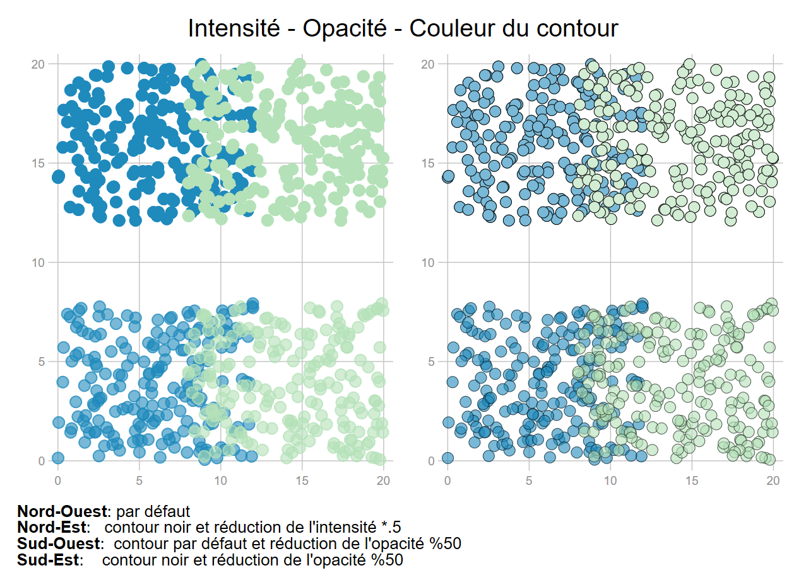
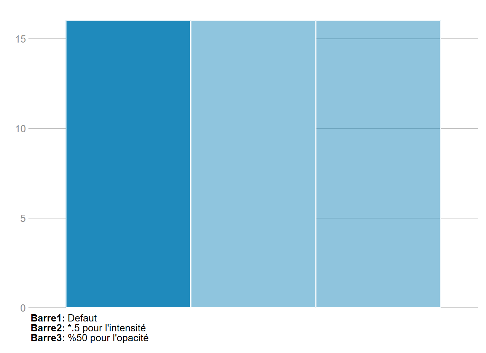
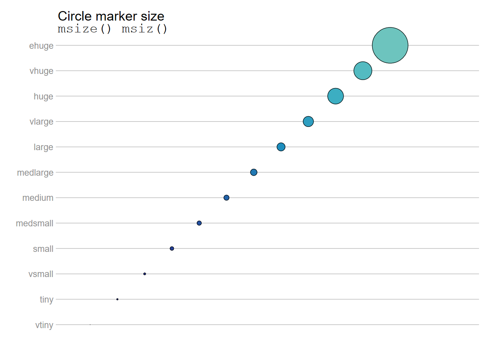
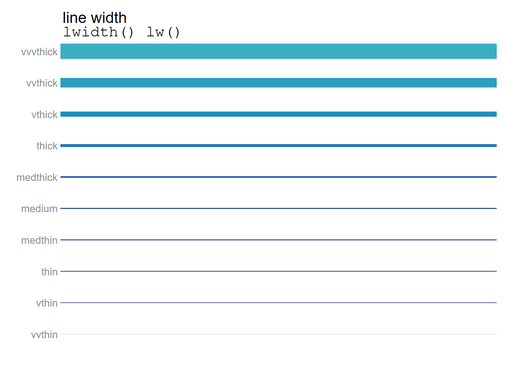
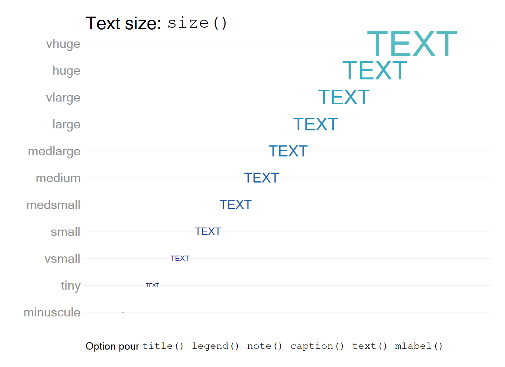
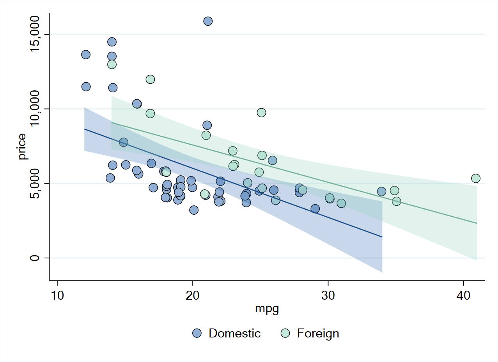

Options: couleur, épaisseur
Il s’agit ici d’un tour d’horizon forcément incomplet des options qui vont permettre de modifier et d’habiller les graphiques, afin d’en améliorer la visibilité. On va regarder principalement les options liées aux couleurs, tailles/épaisseurs dans cette section; ainsi que quelques paramètres de bases pour les axes, légendes, titres. L’idée est de ne traiter que des options qui sont utilisées au moins une fois dans le document.
Couleurs
Se reporter au chapitre 3, pour un tour d’horizon plus complet sur les couleurs et les palettes de couleurs [mettre lien]
3 Eléments entrent dans les options relatives aux couleurs.
Nom - code couleur Un nom de couleur prédéfini ou un code couleur numérique : la couleur navy (première couleur de la palette Stata s2) a pour code RGB [Red-Green-Blue] "26 71 11".
Pour un élément de type ligne, courbe… : lc(navy) = lc("26 71 11")
Saturation/intensité On peut modifier la saturation : clair (blanc) <=> foncé (noir). Une couleur par défaut ou renseignée manuellement a une intensité de 1. On tire vers le blanc en réduisant cette saturation, vers le noir en l’augmentant. Après le nom ou le code couleur, l’intensité est modifiée par *# avec # supérieur ou égal à 0 (0=blanc).
Pour un élément de type barre, l’option pour modifier une couleur est donnée par fc() (f pour fill, c pour color tronqué) : fc(*.5) réduit la saturation de 50% de la couleur par défaut, fc("26 71 11*1.2") augmente de 20% la saturation de la couleur navy, ici renseignée par son code RGB.
Transparence En retard sur ce point jusqu’à la version 15 de Stata, on peut maintenant modifier l’opacité (transparence) des couleurs. La transparence permet de gérer les effets de superposition, mais on doit se méfier des effets de flou qui peuvent se révéler assez désagréable, en particulier pour les nuages en l’absence de contour sur les bulles. L’argument de l’option exprime un pourcentage d’opacité avec comme valeur minimale 0 et une valeur maximale 100 (100 = valeur par défaut). Après le nom ou le code de la couleur, l’opacité est réduite par %#. On peut utiliser une transparence totale (%0) pour cacher des éléments d’un graphique.
Pour un élément de type bulle : mc(%50) réduit de moitié l’opacité de la couleur par défaut, mc("26 71 11%70") applique 70% de transparence à la couleur navy.
Comme on le voit dans le second graphique ci-dessous, il n’y a pas trop de sens à baisser simultanément la saturation et l’opacité, une couleur plus transparente étant plus claire. On peut à l’inverse augmenter la saturation et baisser l’opacité.



Tailles/épaisseurs
On peut altérer les tailles et épaisseurs d’éléments composants le graphiques en s’appuyant soit sur des arguments prédéfinis, soit en jouant sur les valeurs de plusieurs types d’unités, absolues (cm, point, pouce) ou relatives. Certaines ont été implémentées à la version 16 de Stata. Lorsqu’elles sont prédéfinies, leur mémorisation peut s’avérer un peu laborieuse avec une liste qui diffère selon le type d’objet. On peut donc privilégier la modification directe des valeurs en choissisant des unités absolues (pouces, cm) ou relative. Dans mes graphiques, je priviliégie sauf exception l’utilisation de valeurs relatives.
Tailles prédéfinies



Tailles reposant sur des valeurs
Pour modifier directement les valeurs des tailles et épaisseurs Stata propose 6 unités : 3 absolues et 3 relatives. Ces dernières sont un peu obscures au niveau de la définition de la valeur de référence. # donne la valeur de la modification.
Absolues (par ordre décroissant) : le pouce (#in), le centimètre (#cm), et le point (#pt).
Relatives:
option(#rs): valeur relative par rapport au minimum de la longueur et de la largeur du graphique (=100). Si option(.5rs) et que le graphique fait 10 de largeur et 20 de longueur, la référence est associée à la largeur et est égale à 100. La taille ou l’épaisseur de l’élément fera alors .5% de cette référence. L’aide de Stata ne s’attarde pas sur ce type de modification, pas forcément très claire.option(#): également une valeur par rapport au minimum de la largeur et de la longueur, mais on garde cette valeur comme référence. Avec option(.5) et que le minimum est toujours égal à 10 (largeur), la taille ou l’épaisseur de l’élément est égale à .5% de 10.option(*#): coefficient multiplicateur d’une taille ou épaisseur par défaut définie par le style (thème) du graphique. Je privilégie ce type de paramétrisation. Sauf exception, j’utilise cette option.

Exercice
Reproduire les deux graphiques ci-dessous avec la base auto: sysuse auto.dta.
Solution : https://github.com/mthevenin/stata_fr/blob/master/exercices/exo1
Graphique(s) 1
- Reproduire l’un et/ou l’autre de ces graphiques avec les variables mpg et foreign.
- Les histogrammes sont générés avec la fonction
tw histogram(à préférer à la commande de type onewayhistogram). - Les densités sont estimées avec la fonction
kdensity[help kdensity] et le graphique est généré avectw area[help twoway area]. - Les couleurs sont issues de la palette de type séquentielle YlGnBu de la collection Brewer (voir le chapitre sur les palettes de couleur). les codes des deux couleurs sont
"34 94 168"et"139 209 187".

Graphique(s) 2
- Nuage de points des variables price et mpg pour les deux modalités de la variable foreign, avec report des OLS.
- La droite de l’OLS est générée avec le type de graphique tw lfitci:
- Couleur de la droite : option
clc() - Couleur de remplissage l’intervalle de confiance: option
fc() - Couleur du contour de l’intervalle de confiance: option
alc()
